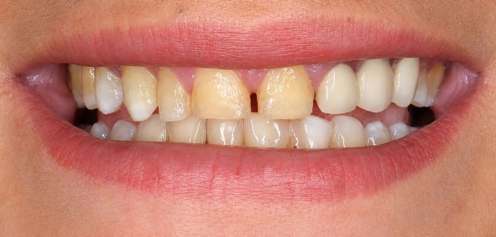
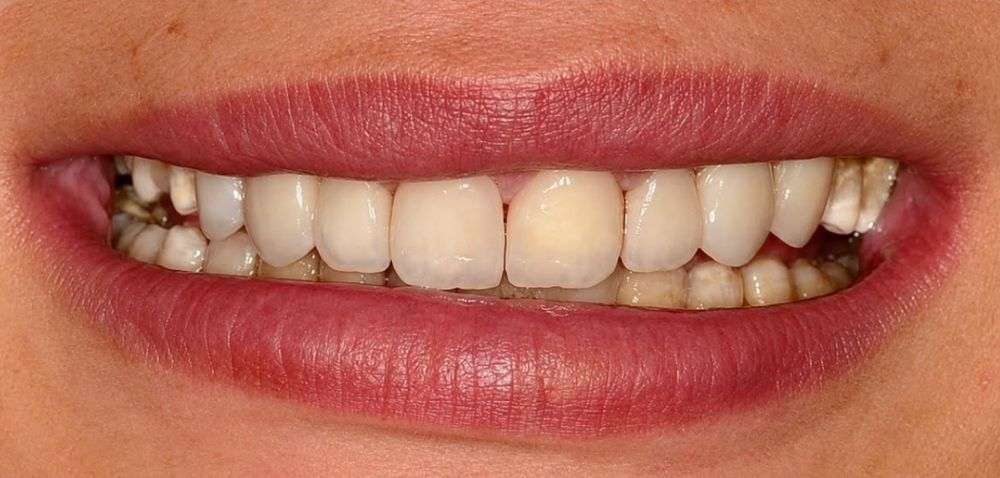

Profile
Dentist, graduated in 2025 from the Faculty of Dentistry, Assiut University, ranked 19th in my class. My clinical work covers esthetic and restorative dentistry, fixed and removable prosthodontics, endodontics, periodontics, oral surgery and pediatric dentistry.
Every case in this portfolio is documented with clinical photographs and radiographs, from the initial situation to the final result.
Clinical experience
Featured case
Drag the handle to compare the smile before and after treatment.


⇆BEFOREAFTEREsthetic rehabilitation: E-max veneers harmonized with a multilayered zirconia bridge
Portfolio
Filter by specialty and tap any case to view it full size.
Contact